Learn Chinese Characters with Stories
Chinese characters began as pictures. Follow each glyph back to the thing it drew — a sun, a sheep, a boat — and learning Chinese stops feeling like memorising strokes.
Why learn Chinese through stories?
A character is easier to remember when you can see the image and the idea behind it. The library below covers 270 pictographs. The library below covers 270 pictographs.
Start with pictures
Pictographs are the oldest layer of Chinese writing: a direct sketch of the world around us.
Follow the evolution
See how an ancient drawing simplified into the shape you read and write today.
Build connected meanings
One image explains many compounds. Learn 羊 once, and characters built from it make sense.
Explore 270 Chinese pictographs
Every character in the database whose explanation is tagged 象形 (pictograph), grouped into 12 themes. Each card opens a character story. Links are placeholders for now while the individual stories are being written.
Sky, light & seasons 11
Sun, moon, clouds, fire and the turning seasons.
 日sunA radiant sun with a bright centre.
日sunA radiant sun with a bright centre.
 夕evening moonA crescent moon with a wide open gap.
夕evening moonA crescent moon with a wide open gap.
 云cloudCurling clouds rising into the air.
云cloudCurling clouds rising into the air.
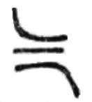
气air · breathStreams of air, wind and vapour flowing sideways. 晶stars · brightMany bright points gathered together.
晶stars · brightMany bright points gathered together.
 秋autumnMoths drawn towards the fire of late autumn.
冬winterTrees stripped of fruit, leaving two small stems.
秋autumnMoths drawn towards the fire of late autumn.
冬winterTrees stripped of fruit, leaving two small stems.
 电lightningLightning flashing from sky to ground.
电lightningLightning flashing from sky to ground.
 申lightningLightning running from the sky to the earth.
申lightningLightning running from the sky to the earth.
 火fireFlames rising in separate tongues.
火fireFlames rising in separate tongues.
 㣎starlightRays of starlight spreading in all directions.
㣎starlightRays of starlight spreading in all directions.
Earth, water & landscape 11
Land, water, roads and the shape of the ground.
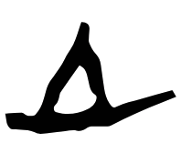
土earth · soilEarth with a lump of stone or soil above it. 田fieldLand divided by paths into square plots.
田fieldLand divided by paths into square plots.
 川riverLong streams flowing one after another.
乙flowing lineA winding current of water or air.
川riverLong streams flowing one after another.
乙flowing lineA winding current of water or air.
 彳roadA path extending to the right from an opening.
彳roadA path extending to the right from an opening.
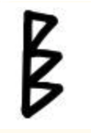
山mountainFlame-like peaks, or a slope of layered stone. 厂cliffA slanted stone lying on the ground.
厂cliffA slanted stone lying on the ground.
 阜mound · hillLayered slopes of stone stacked into a high hill.
凸raised groundEarth or stone sticking up above the ground.
凹hollowA bowl, basin or pit with an indentation.
阜mound · hillLayered slopes of stone stacked into a high hill.
凸raised groundEarth or stone sticking up above the ground.
凹hollowA bowl, basin or pit with an indentation.
 回whirlpoolA spiral of curling, swirling water.
回whirlpoolA spiral of curling, swirling water.
Plants, trees & farming 22
Sprouts, trees, crops and everything that grows.
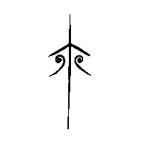
尒rootsTree roots spreading in every direction. 余thornThe sharp pointed tip of a thorn.
余thornThe sharp pointed tip of a thorn.
 卜branchA branch or stick slanting from a tree side.
卜branchA branch or stick slanting from a tree side.
 竹bambooA tough stalk that bends but will not break.
來come · wheatTree leaves hanging down.
竹bambooA tough stalk that bends but will not break.
來come · wheatTree leaves hanging down.
 木treeA tree with branches above and roots below.
林forestDense trees growing together.
才stakeA stick driven into the ground.
桑mulberryA tree with many branching leaves.
木treeA tree with branches above and roots below.
林forestDense trees growing together.
才stakeA stick driven into the ground.
桑mulberryA tree with many branching leaves.
 耒ploughA hand-held plough turning the soil.
耒ploughA hand-held plough turning the soil.
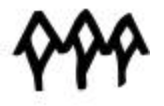
齊even · equalCrop tips standing in an even line. 禾grainA young cereal plant with drooping ears.
韭chivesA clump of chives growing as one bunch.
禾grainA young cereal plant with drooping ears.
韭chivesA clump of chives growing as one bunch.
 瓜melonA round fruit hanging between two leaves.
瓜melonA round fruit hanging between two leaves.
 未not yetA tender shoot before it becomes a branch.
未not yetA tender shoot before it becomes a branch.
 癸okra · lastA shape narrowing towards the middle, like okra.
癸okra · lastA shape narrowing towards the middle, like okra.
 世generationThree tiers of leaves on a plant.
世generationThree tiers of leaves on a plant.
 爾networkTree roots crossing like a net.
爾networkTree roots crossing like a net.
 习practiceThe shape of a leaf.
夲tipA sharp pointed end.
习practiceThe shape of a leaf.
夲tipA sharp pointed end.
Animals & birds 39
Farm animals, wild beasts, birds, fish and insects.
 牛oxAn ox head with two horns and two ears.
羊sheepA sheep head with two curling horns.
牛oxAn ox head with two horns and two ears.
羊sheepA sheep head with two curling horns.
 犬dogA slim-waisted dog seen from the side.
犬dogA slim-waisted dog seen from the side.
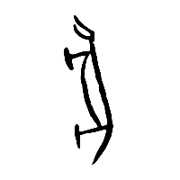
豕pigThe shape of a pig.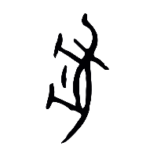
豖pig teatsA pig belly with two rows of teats. 豩two pigsTwo pigs side by side.
豩two pigsTwo pigs side by side.
 豸wildcatA keen-eyed hunter that stalks at night.
豸wildcatA keen-eyed hunter that stalks at night.
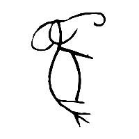
象elephantThe shape of an elephant.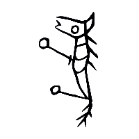
馬horseA running horse with a flowing mane. 鹿deerA deer with branching antlers.
鹿deerA deer with branching antlers.
 兔rabbitA rabbit with long ears.
兔rabbitA rabbit with long ears.
 萈wide-horned animalAn animal with horns spreading far apart.
萈wide-horned animalAn animal with horns spreading far apart.
 鼠ratA rat with large front teeth that gnaws grain.
鼠ratA rat with large front teeth that gnaws grain.
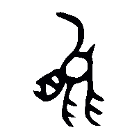
能crocodile · capableA crawling crocodile or python. 魚fishA swimming fish with a net-like scale pattern.
鯀fishingA hand holding a line to catch fish.
魚fishA swimming fish with a net-like scale pattern.
鯀fishingA hand holding a line to catch fish.
 燕swallowA swallow darting upward in a clear sky.
鳥birdA winged bird made for high flight.
燕swallowA swallow darting upward in a clear sky.
鳥birdA winged bird made for high flight.
 烏crowA loud, cawing crow.
隹short-tailed birdA winged bird that can fly high.
雚owlThe shape of an owl.
烏crowA loud, cawing crow.
隹short-tailed birdA winged bird that can fly high.
雚owlThe shape of an owl.
 雈horned owlAn owl with horn-like feathers and deep eyes.
羽featherA single feather, or the fibres of a broom.
雈horned owlAn owl with horn-like feathers and deep eyes.
羽featherA single feather, or the fibres of a broom.
 虍tiger's mouthThe wide mouth of a carnivore.
虍tiger's mouthThe wide mouth of a carnivore.
 虎tigerA tiger with a huge open mouth.
虎tigerA tiger with a huge open mouth.
 角hornAn animal horn, or a braid at the back of the head.
角hornAn animal horn, or a braid at the back of the head.
 毛hair · furTail fur, roots, or a fish backbone.
毛hair · furTail fur, roots, or a fish backbone.
 朱spiderThe shape of a spider.
朱spiderThe shape of a spider.
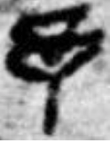
予scalesOverlapping scales gathered together. 昆same · equalTwo legs or claws of equal length.
昆same · equalTwo legs or claws of equal length.
 九nine · tailThe curved tail at the end of an animal's spine.
九nine · tailThe curved tail at the end of an animal's spine.
 萬scorpionA scorpion lifting its tail.
巳tadpoleA young tadpole.
萬scorpionA scorpion lifting its tail.
巳tadpoleA young tadpole.
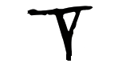
辛bitter · scalesTriangle scales overlapping like fish scales. 虫insectA tiny, pointed, legless larva.
虫insectA tiny, pointed, legless larva.
 它snakeA snake with a twisting body.
它snakeA snake with a twisting body.
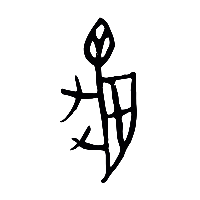
龜turtleThe shape of a turtle. 黽frogA frog or toad.
求fur · seekThe hide of a hunted animal, with head, ears and tail.
黽frogA frog or toad.
求fur · seekThe hide of a hunted animal, with head, ears and tail.
The human body & senses 31
Eyes, hands, feet and the parts that make us human.
 止footA foot used for walking.
止footA foot used for walking.
 牙toothLong upper and lower fangs facing each other.
牙toothLong upper and lower fangs facing each other.
 疋thighA thick, full thigh like a pestle.
疋thighA thick, full thigh like a pestle.
 爪clawA hand, bird claw or bamboo-like claw.
爪clawA hand, bird claw or bamboo-like claw.
 又right handThe shape of a right hand.
又right handThe shape of a right hand.
 厷upper armStrong muscle on the upper arm.
臣eyeThe shape of an eye.
厷upper armStrong muscle on the upper arm.
臣eyeThe shape of an eye.
 目eyeThe outline of an eye.
目eyeThe outline of an eye.
 眉eyebrowA brow stroke above the eye.
自noseThe nose in the middle of the face.
眉eyebrowA brow stroke above the eye.
自noseThe nose in the middle of the face.
 冎bonesJointed bones that can bend and stretch.
冎bonesJointed bones that can bend and stretch.
 丂hanging armA long arm hanging on one side of the body.
丂hanging armA long arm hanging on one side of the body.
 身bodyThe solid trunk that holds the limbs.
身bodyThe solid trunk that holds the limbs.
 面faceThe face around the eyes and nose.
万backOne side of the back below the shoulder, with ribs.
面faceThe face around the eyes and nose.
万backOne side of the back below the shoulder, with ribs.
 首headA head with hair, mouth, nose and eyes.
髟long hairA person with long flowing hair.
首headA head with hair, mouth, nose and eyes.
髟long hairA person with long flowing hair.
 長long · growLong hair flowing down behind the head.
長long · growLong hair flowing down behind the head.
 勹spineA long spine made of many joints.
勹spineA long spine made of many joints.
 心heartThe shape of a heart, and of emotion.
心heartThe shape of a heart, and of emotion.
 囟bag · fontanelleA cloth bag tied at one end.
囟bag · fontanelleA cloth bag tied at one end.
 耳earThe outline of an ear.
耳earThe outline of an ear.
 手handA hand showing five fingers.
手handA hand showing five fingers.
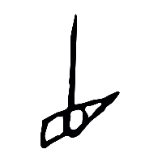
直straightAn eye looking straight ahead.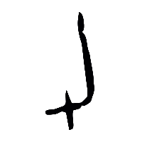
力strengthVeins that bulge on the hand when straining. 尤extra fingerA hand with an extra finger on one side.
尤extra fingerA hand with an extra finger on one side.
 㕚fingernailsThe nails on a hand.
㕚fingernailsThe nails on a hand.
 㠯buttocksA body part with two large ends.
冉beardThick hair from the cheeks to the chin.
㠯buttocksA body part with two large ends.
冉beardThick hair from the cheeks to the chin.
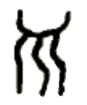
而beardA long beard flowing down like a river.People, family & posture 39
Postures, family roles and people in motion.
 人personAn upright person seen from the side.
人personAn upright person seen from the side.
 屰inverted personA person standing upside down.
父elder · fatherAn elder leaning on a staff.
尹hold · rulerA hand holding a long stick or rod.
屰inverted personA person standing upside down.
父elder · fatherAn elder leaning on a staff.
尹hold · rulerA hand holding a long stick or rod.
 夬ring · decideA ring slipped over a finger.
夬ring · decideA ring slipped over a finger.
 奇ride · strangeA person straddling a horse.
奇ride · strangeA person straddling a horse.
 入enterOnly the legs showing while crawling into a hole.
何carryA person carrying something on the shoulder.
匕prone personA person lying face down.
入enterOnly the legs showing while crawling into a hole.
何carryA person carrying something on the shoulder.
匕prone personA person lying face down.
 北back to backTwo people turned away from each other.
北back to backTwo people turned away from each other.
 兒childA baby whose soft spot has not closed yet.
卩kneeling personA person sitting low with bent knees.
兒childA baby whose soft spot has not closed yet.
卩kneeling personA person sitting low with bent knees.
 厃personA person seen standing upright.
厃personA person seen standing upright.
 黑darkA head covered with cloth so nothing can be seen.
黑darkA head covered with cloth so nothing can be seen.
 大bigA person with arms and legs spread wide.
夭dancingA person dancing and swaying the arms.
大bigA person with arms and legs spread wide.
夭dancingA person dancing and swaying the arms.
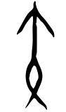
交crossedA person with legs crossed.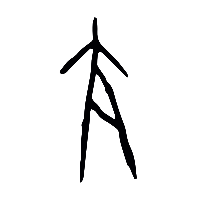
亢stridingA person pushing a leg outward with effort.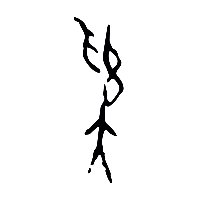
奚braidA person with a very long braid. 女womanA kneeling woman with crossed hands, sewing cloth. 母motherA woman with breasts for nursing a child.
母motherA woman with breasts for nursing a child.
 姦togetherSeveral women close together, hand in hand.
姦togetherSeveral women close together, hand in hand.
 氏clan · proneA person lying down, an old form of 匕.
化changeA person turning from front to back and back again.
疑doubtA person with an open mouth, uncertain.
氏clan · proneA person lying down, an old form of 匕.
化changeA person turning from front to back and back again.
疑doubtA person with an open mouth, uncertain.
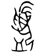
釁wash · ceremonyA person washing and combing hair at a basin. 乑crowdThree people together.
乑crowdThree people together.
 㜽childThe round back of a head, a newborn baby.
禸lower bodyA swaying lower body.
㜽childThe round back of a head, a newborn baby.
禸lower bodyA swaying lower body.
 尢twistedA person with a twisted body.
尢twistedA person with a twisted body.
 巴curledA person curled up kneeling on the ground.
巴curledA person curled up kneeling on the ground.
 臽trapA person falling into a pit.
臽trapA person falling into a pit.
 疌climbA person climbing a tree with hands and feet.
疌climbA person climbing a tree with hands and feet.
 丮holdTwo hands holding and managing an object.
丮holdTwo hands holding and managing an object.
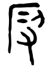
叚braceTwo hands braced in front, body leaning like a shrimp. 寽giveA hand passing something to another hand.
乇hold flatA palm held flat to support an object.
寽giveA hand passing something to another hand.
乇hold flatA palm held flat to support an object.
 文patternAn ancient carved figure of a person facing forward.
文patternAn ancient carved figure of a person facing forward.
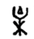
主lampA lamp stand with a fire tray on top.Tools, weapons & crafts 36
Weapons, farm tools, vehicles and crafted things.
 干shield · trunkA forked branch used to support or defend.
干shield · trunkA forked branch used to support or defend.
 刀knifeA small blade shaped like a finger.
刃bladeThe sharp edge or tip of a knife.
刀knifeA small blade shaped like a finger.
刃bladeThe sharp edge or tip of a knife.
 刅blade edgeA variant of 刃, with sparks at the edge.
刅blade edgeA variant of 刃, with sparks at the edge.
 畀blunt arrowA smoothed, blunt arrowhead.
工toolA carpenter's joint peg used for assembly.
乃bow curveThe arc of a parabola, like a bow.
畀blunt arrowA smoothed, blunt arrowhead.
工toolA carpenter's joint peg used for assembly.
乃bow curveThe arc of a parabola, like a bow.
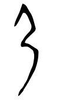
弓bowThe curved body of an archer's bow. 矢arrowAn arrow with a feather-like tail.
矢arrowAn arrow with a feather-like tail.
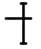
戈sickleA reaping sickle mounted on a handle. 戉axeA round hammer or axe on a handle.
戉axeA round hammer or axe on a handle.
 我forkA fork made of posts fixed on a wooden handle.
我forkA fork made of posts fixed on a wooden handle.
 矛spearA hand-held spear or javelin.
矛spearA hand-held spear or javelin.
 斤axeA flat-bladed axe with a curved handle.
斤axeA flat-bladed axe with a curved handle.
 斗waterwheelA turning waterwheel with a supporting axle.
斗waterwheelA turning waterwheel with a supporting axle.
 勺ladleA small dipper that gathers towards its centre.
勺ladleA small dipper that gathers towards its centre.
 尞ribs · spokesUmbrella ribs or bicycle spokes radiating out.
尞ribs · spokesUmbrella ribs or bicycle spokes radiating out.
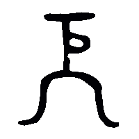
戹yoke partA chariot part that fits around a horse's neck. 弋stakeA stake driven into and fixed in the ground. 乂crossed sticksTwo counting rods crossing in the middle. 戊broad axeA broad-headed axe on a wooden handle.
戊broad axeA broad-headed axe on a wooden handle.
 己threadNeedle thread moving up and down in sewing.
午needleA tiny needle or small stick.
由fluteA flute with a small hole.
己threadNeedle thread moving up and down in sewing.
午needleA tiny needle or small stick.
由fluteA flute with a small hole.
 玄silk cordTwisted and braided silk or rope.
玄silk cordTwisted and braided silk or rope.
 幻thin threadSilk drawn to one side until it becomes thin.
幻thin threadSilk drawn to one side until it becomes thin.
 㡭joined threadTwo lengths of silk joined end to end.
㡭joined threadTwo lengths of silk joined end to end.
 甬bellA hanging bell or chime that sounds far away.
甬bellA hanging bell or chime that sounds far away.
 臿shovelTwo hands pushing a spade into the ground.
臿shovelTwo hands pushing a spade into the ground.
 圭swordA pointed, straight sword with a short hilt.
圭swordA pointed, straight sword with a short hilt.
 幸handcuffsA device that locks around the hands.
幸handcuffsA device that locks around the hands.
 車chariotA cart with two wheels.
車chariotA cart with two wheels.
 輦carriageA carriage stopped with its driver beside the horses.
兩shaftsThe two shafts of a chariot for harnessing horses.
串axleTwo wheels strung on a single axle.
輦carriageA carriage stopped with its driver beside the horses.
兩shaftsThe two shafts of a chariot for harnessing horses.
串axleTwo wheels strung on a single axle.
 革hideShed cicada skin, snakeskin or shell.
革hideShed cicada skin, snakeskin or shell.
Vessels, containers & ornaments 34
Pots, bowls, baskets, beads and things that hold.
 玉jadeBeads strung together on a thread.
玉jadeBeads strung together on a thread.
 于beadsBeads threaded on a string.
于beadsBeads threaded on a string.
 凵basinA basin, bowl or pit with an opening.
冊bookBamboo slips laid side by side.
束bundleA package tied at both ends.
凵basinA basin, bowl or pit with an opening.
冊bookBamboo slips laid side by side.
束bundleA package tied at both ends.
 東bundle · eastA bundle tied at both ends.
東bundle · eastA bundle tied at both ends.
 舟boatA vessel that carries people over water.
舟boatA vessel that carries people over water.
 鬲potA clay cooking pot supported by legs.
鬲potA clay cooking pot supported by legs.
 鼎cauldronA heavy metal pot on legs, used as a ritual vessel.
豆drum standA stool or drum with a base and a body on top.
鼎cauldronA heavy metal pot on legs, used as a ritual vessel.
豆drum standA stool or drum with a base and a body on top.
 皿basinA bowl or dish with an open hollow.
爵wine cupA wine cup with two pointed lips, held in the hand.
皿basinA bowl or dish with an open hollow.
爵wine cupA wine cup with two pointed lips, held in the hand.
 奠standA stand for a wine jar, a base beneath an object.
久pouring vesselA hinged vessel that tilts to pour or catch water.
奠standA stand for a wine jar, a base beneath an object.
久pouring vesselA hinged vessel that tilts to pour or catch water.
 盥wash basinHands washing inside a basin.
壺kettleA water kettle with a handle.
盥wash basinHands washing inside a basin.
壺kettleA water kettle with a handle.
 酉wine jarA pointed-bottom, cone-shaped wine bottle.
匚boxA wooden box or bamboo basket.
甾basketA woven basket, bin or bird's nest.
酉wine jarA pointed-bottom, cone-shaped wine bottle.
匚boxA wooden box or bamboo basket.
甾basketA woven basket, bin or bird's nest.
 其winnowing basketA basket with crossing slits for sifting grain.
其winnowing basketA basket with crossing slits for sifting grain.
 离strainerA mesh strainer used in frying.
离strainerA mesh strainer used in frying.
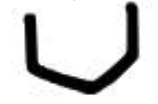
臼mortarA hollow basin or pit with grooves worn by climbing. 貝shellA bivalve shell that can hold a precious pearl. 賏necklaceRows of jade and shell beads hanging at the neck.
賏necklaceRows of jade and shell beads hanging at the neck.
 貫string of shellsShells and treasures strung on one cord.
貫string of shellsShells and treasures strung on one cord.
 毌sliced piecesA piece divided into parts.
毌sliced piecesA piece divided into parts.
 朋necklaceRows of beads like a necklace, or strings of a zither.
朋necklaceRows of beads like a necklace, or strings of a zither.
 彔filter bagAn object filtered in a bag, with juice dripping below.
彔filter bagAn object filtered in a bag, with juice dripping below.
 西bagA cloth bag tied at one end.
西bagA cloth bag tied at one end.
 卤bagA cloth bag tied at one end.
卤bagA cloth bag tied at one end.
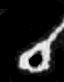
厶bagA cloth bag, often written as a triangle. 巾clothA vertical post or a hanging cloth.
巾clothA vertical post or a hanging cloth.
 帶beltA belt or scarf tied like a rope with loose ends.
帶beltA belt or scarf tied like a rope with loose ends.
 衣clothingThe shape of a garment worn on the body.
衣clothingThe shape of a garment worn on the body.
Shelter, walls & clothing 17
Roofs, doors, walls, mats and garments.
 亼coverA hat covering the head, or a lid closing a vessel.
亼coverA hat covering the head, or a lid closing a vessel.
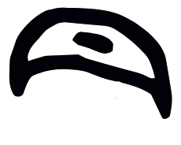
冃hatA hat that covers the head. 宀roofA house where people can live.
宀roofA house where people can live.
 良bright houseA house open on both sides with doors and light.
良bright houseA house open on both sides with doors and light.
 歺broken houseA ruined house with exposed beams and leaning walls.
歺broken houseA ruined house with exposed beams and leaning walls.
 广eavesA house seen from the side, with only an eave.
广eavesA house seen from the side, with only an eave.
 門gateTwo wooden panels facing each other.
門gateTwo wooden panels facing each other.
 戶doorA single door of a pen or window.
戶doorA single door of a pen or window.
 辰shadow houseA slanted house, like a shadow on the ground.
辰shadow houseA slanted house, like a shadow on the ground.
 丙house postsLegs or posts beneath a house or boiler.
丙house postsLegs or posts beneath a house or boiler.
 六house · sixA house shape, later borrowed for the number six.
六house · sixA house shape, later borrowed for the number six.
 井well frameA wooden frame enclosing a well.
井well frameA wooden frame enclosing a well.
 曲bent wallA wall folded and bent.
曲bent wallA wall folded and bent.
 乚wallThe shape of a wall.
乚wallThe shape of a wall.
 爿planksBoards nailed together or a woven bamboo mat.
爿planksBoards nailed together or a woven bamboo mat.
 㐁matA woven bamboo mat with a repeating texture.
㐁matA woven bamboo mat with a repeating texture.
 几tableA post or table leg.
几tableA post or table leg.
Numbers, signs & stems 23
Numbers, marks, stems and abstract shapes.
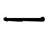
一oneA level line: the ground, or the number one. 上aboveAn object placed above another.
上aboveAn object placed above another.
 下belowAn object placed below another.
三threeThree counting rods in a row.
下belowAn object placed below another.
三threeThree counting rods in a row.
 十tenThe count of ten fingers, a complete set.
卅thirtyThree tens written together.
四fourA circle divided by an inscribed triangle into four parts.
十tenThe count of ten fingers, a complete set.
卅thirtyThree tens written together.
四fourA circle divided by an inscribed triangle into four parts.
 七sevenA root or shoot pushing through the ground.
七sevenA root or shoot pushing through the ground.
 八eightA line split into two falling halves.
八eightA line split into two falling halves.
 丨poleA long bamboo pole or stick.
丄upAn arrow-like mark pointing upward.
丅downAn arrow-like mark pointing downward.
丨poleA long bamboo pole or stick.
丄upAn arrow-like mark pointing upward.
丅downAn arrow-like mark pointing downward.
 中centreThe centre of ripples made by a stone in water.
中centreThe centre of ripples made by a stone in water.
 小smallSomething tapering upward, or a tiny dot.
小smallSomething tapering upward, or a tiny dot.
 少fewSmall drops and grains.
少fewSmall drops and grains.
 丩hookTwo hooks joined like a chain.
丩hookTwo hooks joined like a chain.
 互hooksThe same pair of linked hooks, later written 互.
互hooksThe same pair of linked hooks, later written 互.
 囧wheelA round cart wheel, or a swirling whirlpool.
亘spiralA curling, whirling shape.
囧wheelA round cart wheel, or a swirling whirlpool.
亘spiralA curling, whirling shape.
 凡encloseSomething enclosing and merging several objects.
凡encloseSomething enclosing and merging several objects.
 亞incompleteA square with missing corners.
丁solidA solid, filled-in object.
亞incompleteA square with missing corners.
丁solidA solid, filled-in object.
 冂inwardPushing inward from both sides.
冂inwardPushing inward from both sides.
Actions & movement 5
Small scenes of movement and change.


Rare & uncertain forms 2
Forms whose reading or classification is uncertain.

How to read a character story
A simple routine for learning Chinese characters without rote copying.
Look at the oldest shape
Begin with the oracle bone or bronze form: what object does it draw?
Connect picture to meaning
Ask what the picture points to — a horn, a foot, a ripple — and how that meaning grew.
Read it in a word
Finish with pinyin and a real word, so the story becomes a usable vocabulary item.
Learning Chinese: quick answers
Are all Chinese characters pictographs?
No. Pictographs are the oldest layer. Many later characters combine a meaning part and a sound part, and knowing the pictographs makes those combinations much easier to learn.
Do I need to know oracle bone script?
No. The ancient forms are used here as a shortcut to understanding modern characters, not as a separate writing system to memorise.
Where should I start?
Start with 日, 人, 口, 木 and 羊 — good first characters — then follow the related characters from each story.